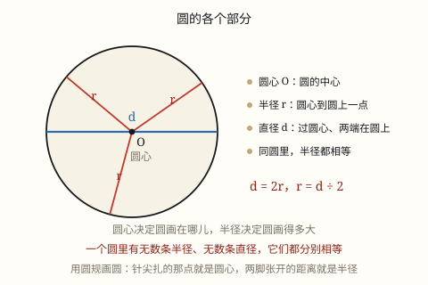
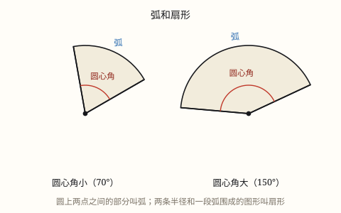

圆的特征与扇形的认识
圆心决定圆画在哪里，半径决定圆画多大。同一个圆里半径全都相等，直径是半径的两倍。
| 所属主题 | 图形的认识与测量 |
|---|---|
| 所属模块 | 图形与几何 |
| 课标学段 | 第三学段（5~6年级） |
| 前置知识 | 线段、射线、直线与角的认识 |
| 核心素养 | 几何直观空间观念推理意识 |
教材定位
人民教育出版社《2024年版》
对应六上第 4 单元「圆」：圆的认识、圆规画圆与圆的旋转对称性。；对应六上第 4 单元「圆」：扇形的认识。
课标要求
| 图形与几何·图形的认识与测量 | 知道三角形任意两边之和大于第三边（例32）；知道三角形内角和是180°。 印刷第 32 页 行为动词：知道 |
|---|
说明
圆是到定点距离等于定长的所有点围成的图形。这句话里藏着两个关键的东西：
圆心（O）——那个「定点」，决定圆画在纸上的哪个位置。
半径（r）——那个「定长」，决定圆画多大。圆心到圆上任意一点的距离都叫半径。
通过圆心、两端都在圆上的线段叫直径（d）。同一圆里，直径的长度正好是半径的两倍：d = 2r，反过来 r = d ÷ 2。
圆里还有两个常用名字：圆上两点之间的部分叫弧，顶点在圆心、两边是半径的角叫圆心角。
（扇形的认识）
在圆上取两点，这两点把圆周分成两段，每一段都叫弧。这两点和圆心连成的角，叫圆心角。
由圆心角的两条半径和圆心角所对的弧围成的图形，叫扇形。简单说：扇形 = 两条半径 + 一段弧。
扇形的大小由圆心角和半径共同决定：同一个圆里，圆心角越大，扇形越大；圆心角相同、半径越大，扇形也越大。
扇形的两条直边是半径，所以它们一样长——这是辨认扇形最可靠的一条线索。
使用场景
自行车轮：轮轴就是圆心，辐条就是半径。辐条一样长，轮子才转得稳。
圆桌餐盘：转盘绕着中心的轴转，中心到桌边处处等距，转盘才不会歪。
操场跑道：两端的半圆以场地中心为圆心，半径决定弯道有多宽。
共享单车定位：App 上以你为圆心画一个圆，半径是「500 米内」，圈里的车都在步行范围内。
井盖为什么是圆的：圆的直径处处相等，怎么放都掉不下去。
（扇形的认识）
折扇与风扇叶片：扇面张开的角度就是圆心角，张得越开扇面越大。
饼图（统计图）：每一块就是一个扇形，圆心角表示这一块占总数的多少。
披萨切块：从圆心下刀切出来的每一块都是扇形。
红绿灯倒计时环：环形进度条亮起的部分是一段弧，配上两条半径就是扇形。
钟面：时针和分针是两条半径，它们扫过的区域是扇形。
注意点
说「直径是半径的 2 倍」时必须带前提：在同圆或等圆中。两个大小不同的圆，直径和半径之间没有这个关系。
同一个圆里有无数条半径、无数条直径，它们的长度分别相等。
直径必须过圆心。两端在圆上但不过圆心的线段叫弦，不是直径。
画圆时圆规两脚间的距离就是半径，不是直径。想画直径 6 厘米的圆，圆规要开到 3 厘米。
圆心决定位置、半径决定大小，这两件事不要混。
（扇形的认识）
小学阶段只要求认识扇形、会指出弧和圆心角，不要求扇形面积公式和弧长公式——那是初中的内容，本站不展开。
扇形的两条直边必须是半径，也就是必须一样长、且都从圆心出发。两条直边不等长的图形不是扇形。
一个圆心角对应一个扇形，但同一段弧配上不同的圆心，就围出不同的扇形。
半圆和整圆是扇形的特例：圆心角 180\degree 的扇形是半圆，圆心角 360\degree 的扇形就是整圆。

图 1：圆心定位置，半径定大小，直径是半径的 2 倍

图 1：扇形由两条半径和一段弧围成，圆心角越大扇形越大
为什么是这样
算理推导
想象用一根绳子画圆：把绳子一端钉在黑板上（这是圆心），另一端绑粉笔，把绳子拉直转一圈。
绳子拉直意味着什么？粉笔到钉子的距离始终不变。这正是圆的定义——到定点距离等于定长的所有点。
所以圆上任意一点到圆心的距离都等于绳长，也就是半径处处相等。这是圆最根本的性质，其他性质都是从这里来的。
那直径为什么等于 2 倍半径？直径是过圆心、两端在圆上的线段。圆心正好把它分成两半，每一半都是从圆心到圆上的线段——也就是半径。所以 d = r + r = 2r。
为什么要强调「同圆或等圆」？因为上面这一步用的是同一条直径的两半。如果把大圆的直径和小圆的半径拿来比，它们根本不在同一个圆里，2 倍关系就不成立了。
最后看圆心和半径的分工：钉子挪一下，圆就跑到别处，但大小不变——圆心管位置；绳子改长一点，圆就变大，但位置不动——半径管大小。两个参数各管一摊。
（扇形的认识）
先回到圆：圆上所有点到圆心的距离都相等。现在在圆上点两个点 A、B。
把 A、B 分别和圆心 O 连起来，得到两条线段 OA、OB。因为它们都是从圆心连到圆上，所以它们都是半径，长度相等。
A、B 两点把圆周分成了两段，我们取其中一段，叫弧 AB。
现在看这三条线围出来的区域：OA 一条半径、弧 AB 一段曲线、OB 一条半径。两条半径夹着一段弧，这就是扇形。
OA 和 OB 之间张开的角度，叫圆心角。为什么叫圆心角？因为它的顶点就在圆心上。
圆心角张得越大，夹住的那段弧就越长，扇形的面积也就越大。所以扇形的大小由圆心角说了算（半径相同的前提下）。
反过来看：如果两条边不是从圆心出发的，那它们根本不是半径，围出来的图形也就不是扇形。这是判断扇形最硬的一条标准。
动手实验
在一张纸上点一个点当圆心，用圆规画一个半径 3 厘米的圆。再拿一把尺子，从圆心向圆上随便量十次距离，把结果记下来。你会发现十次都是 3 厘米——这就是「半径处处相等」的实测证据。接着画一条过圆心的直线，量出它被圆截出的那段（直径），量出来正好 6 厘米。最后再画一条不过圆心、两端也在圆上的线段，量一量——它比 6 厘米短，说明只有过圆心的才是最长的那条。这一步做完，「直径是最长的弦」这句结论你自己就得到了。 （扇形的认识） 用圆规画一个半径 5 厘米的圆，剪下来。先沿一条半径剪开，再沿另一条半径剪开，取下一块——这就是扇形。多剪几块，把圆心角分别做成很小、中等、接近半圆三种，摆在桌上比一比：圆心角越大，那块越大。再把它们拼回原来的圆，你会发现所有扇形的圆心角加起来正好是一整圈，也就是把圆分完了。这个拼图说明扇形就是「圆被切成的一块」。
按场景的例题
例 1（场景：绿化照明） 给圆形的花坛围一圈栅栏
一个圆形花坛的半径是 4 米，它的直径是多少米？
解：同一个圆里，直径 = 2r = 2 × 4 = 8。
答：直径 8 米。
例 2（场景：校园生活） 用圆规画圆
要画一个直径 9 厘米的圆，圆规两脚应张开多少厘米？
解：圆规张开的距离是半径，r = d ÷ 2 = 9 ÷ 2 = 4.5。
答：圆规两脚张开 4.5 厘米。
例 3（场景：行程出行） 共享单车的取车范围
App 显示「以你为中心 500 米内有 12 辆车」，如果把这个范围画成圆，圆心和半径分别是什么？
解：圆心是你所在的位置，半径是 500 米。所有在圆内（含圆上）的车都在可取范围内。
答：圆心 = 你的位置，半径 = 500 米。
例 4（场景：计量与估算） 判断两段圆弧能不能拼成一个整圆
有两段圆弧，半径分别是 2 米和 3 米，把它们接起来能拼成一个圆吗？
解：不能。同一个圆里半径处处相等，半径不同的两段弧不可能属于同一个圆。
答：不能，同圆半径必须相等。
例 5（场景：计量与估算） 辨认钟面上的扇形
3 点整时，时针指向 3，分针指向 12。这两根针和它们之间的弧围成的是什么图形？圆心角是多少度？
解：两根针都是从表盘中心（圆心）出发、长度相等（都是半径），中间夹一段弧，所以是扇形。3 点整时两根针成直角，圆心角是 90\degree。
答：是扇形，圆心角 90\degree。
例 6（场景：饮食与配比） 切披萨
一个披萨从圆心切成 6 块大小一样的扇形，每块的圆心角是多少度？
解：整圆的圆心角是一圈 360\degree，平均分成 6 份，360 ÷ 6 = 60。
答：每块圆心角 60\degree。
例 7（场景：校园生活） 看统计图里的饼图
班级最喜欢的水果统计图里，「苹果」那一块圆心角是 90\degree。这一块占全班的几分之几？
解：整圆 360\degree 代表全班，苹果占 90 ÷ 360 = 1/4。
答：占全班的四分之一。
例 8（场景：计量与估算） 判断一个图形是不是扇形
有个图形由两条线段和一段弧围成，但两条线段长度不相等。它是扇形吗？
解：不是。扇形的两条直边必须都是从圆心出发的半径，长度必须相等。
答：不是扇形。
常用推论
同圆或等圆中：d = 2r，r = d/2。
半径处处相等：同一个圆里所有半径长度相同，所有直径长度也相同。
直径是最长的弦：两端都在圆上的线段中，过圆心的那条最长。
圆心定位置、半径定大小：两个参数合起来唯一确定一个圆。
圆有无数条对称轴：任意一条过圆心的直线都是它的对称轴。
扇形 = 两条半径 + 一段弧，两条直边一定等长。
圆心角的顶点在圆心，它的大小决定扇形占圆的几分之几。
整圆一圈是 360\degree：圆心角 180\degree 的扇形是半圆，90\degree 的是四分之一圆。
扇形占圆的比例 = 圆心角度数 ÷ 360\degree。
半径相同、圆心角越大，扇形越大；圆心角相同、半径越大，扇形越大。
易错点
错说「直径一定是半径的 2 倍」，不提同圆或等圆。
为什么错大小不同的两个圆，直径和半径之间没有固定倍数关系。2 倍关系只在同一圆（或相等的圆）内成立。
正确在同圆或等圆中，直径是半径的 2 倍。
错用圆规画直径 8 厘米的圆时，把圆规张开到 8 厘米。
为什么错圆规两脚间的距离是半径，不是直径。张开 8 厘米画出来的是直径 16 厘米的圆。
正确圆规张开 4 厘米。
错认为两端都在圆上的线段就是直径。
为什么错直径必须经过圆心。不过圆心的叫弦，长度短于直径。
正确两端在圆上且经过圆心的才是直径。
错认为同一个圆里只有一条半径和一条直径。
为什么错从圆心向圆上任意一点都能连出半径，圆上有无数个点，所以有无数条半径和无数条直径。
正确圆有无数条半径、无数条直径。
错看到「两条线段 + 一段弧」就说是扇形。
为什么错两条线段必须是从圆心出发的半径，长度相等、共用一个端点（圆心）。长度不等的就不是。
正确先检查两条直边是否等长且交于圆心，再下结论。
错把圆心角认成圆周上的角。
为什么错圆心角的顶点必须在圆心上。顶点在圆上的角是另一类角（圆周角），初中才学。
正确看角的顶点在哪：在圆心上才是圆心角。
错认为半圆不是扇形。
为什么错半圆由一条直径（两条半径拼成）和半个圆周围成，圆心角 180\degree，完全符合扇形定义。
正确半圆是圆心角为 180\degree 的特殊扇形。
错在小学阶段就去用扇形面积公式或弧长公式。
为什么错这两个公式属于初中内容，超出课标要求。小学只要求认识扇形、会指出弧和圆心角。
正确只做辨认与「圆心角越大扇形越大」的定性判断。
直观理解
把圆想成一根拴在木桩上的绳子，一头钉死，另一头牵着一只羊绕圈吃草。木桩的位置就是圆心——桩子挪了，羊吃草的圈子就跟着挪；绳子的长度就是半径——绳子放长，羊能吃到的范围就变大。羊走到哪儿，离木桩都是一根绳那么远，这就是「半径处处相等」。而羊能走过的最长一条直线，一定是从圈子一边穿过木桩到另一边，正好是两根绳长，也就是直径。 （扇形的认识） 把圆想成一张披萨，从正中间下刀切出来的每一块都是扇形。刀口的两条边就是从圆心出发的半径，所以一样长；外沿那道带芝麻的边就是弧。切得窄，圆心角小，那块就小；切得宽，圆心角大，那块就大。所有块拼回去正好是整张披萨，也就是一整圈。
圆心定位半径定大，一个圆儿两件事。同圆之内半径等，直径正好两个儿。画圆要看圆规脚，张开的是半径别搞错。 （扇形的认识） 扇形就是圆一块，两条半径夹段弧。顶点落在圆心上，这个角叫圆心角。角大弧长扇形大，小学只认不去算。